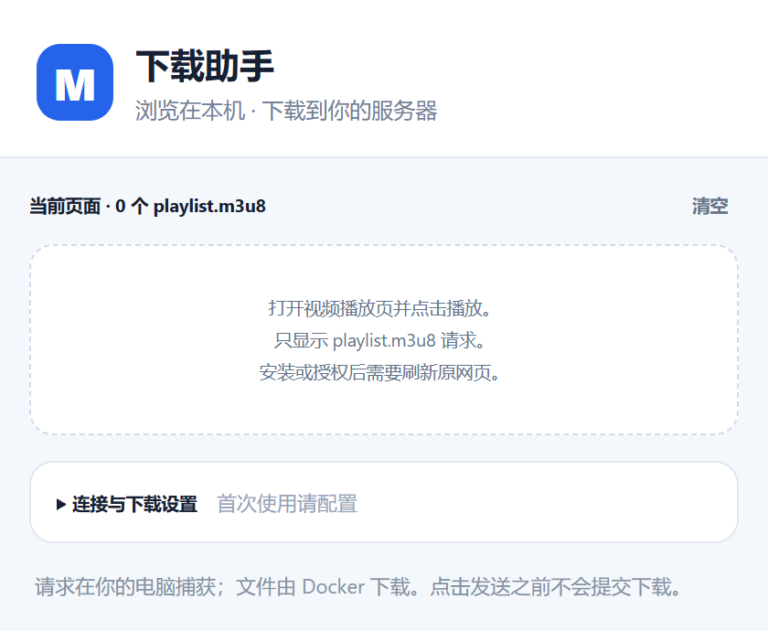

01 / CAPTURE
发现你正在看的视频
监听本机 Chrome 中的 playlist.m3u8 请求。播放后即可看到候选资源，签名与查询参数完整保留。
/app/downloads/VIDEO-001交互演示 · 不访问视频或创建真实任务
从找到视频到创建任务，
把重复填写的事情交给插件。
监听本机 Chrome 中的 playlist.m3u8 请求。播放后即可看到候选资源，签名与查询参数完整保留。
从播放页识别视频编号，生成文件名和独立文件夹。你也可以在确认前修改名称。
确认后打开 m3u8-dl 的下载表单，补齐目录与请求头。沿用已有 Docker 服务和任务管理。
在本机 Chrome 打开视频页面并播放。插件发现目标请求后，会显示页面提示与资源列表。
使用本机网络查看识别的名称和保存目录，选择资源，点击「确认发送」。下载参数自动带到你的服务。
你决定下载什么在 WebUI 核对并开始下载。也可开启「确认后自动开始」，让插件继续点击网站下载按钮。
服务器保存文件本机负责发现，Docker 负责下载。浏览器能访问网页即可捕获；你的下载服务器仍需能访问视频 CDN、分片和密钥地址。

先部署 m3u8-dl，再安装扩展。
只需要配置一次网站地址与保存根目录。
获取正式版 ZIP，将插件文件夹放在长期保留的位置。
打开扩展程序页面，开启「开发者模式」，选择「加载已解压的扩展程序」。
填写 WebUI 地址与容器内保存目录，保存并授权。刷新播放页面，开始使用。
默认先展示候选和参数，再由你确认。自动开始下载是可选设置。
配置保存在浏览器本地，捕获记录保留在会话内。无云同步服务。
Referer 使用捕获时的地址栏网址，User-Agent 使用固定值。不采集 Cookie 或登录密码。
可修改名称，核对路径，管理网站权限。表单变化时提示手动核对。
不需要。扩展配合现有 m3u8-dl WebUI 使用，自动打开并填写下载表单。请先部署上游项目，并保证本机能访问你的 WebUI。不同版本的表单结构可能需要适配。
先刷新视频标签页，再点击播放。插件只捕获路径文件名为 playlist.m3u8 的请求；index.m3u8、master.m3u8 或其他命名不会显示。若网站或 CDN 更换域名，请在设置中开启对应捕获权限并刷新。
浏览器捕获可以正常进行，但下载发生在服务器。Docker 必须能访问捕获的清单、分片和密钥地址；必要时，需要为下载器配置可用的网络出口。
填写 Docker 容器内的保存路径，例如 /app/downloads。插件默认按视频名称生成子目录，最终文件保存位置取决于你的容器目录映射。
在打开的下载页正常登录，插件会等待鉴权完成再填入表单，最长等待十分钟。扩展不保存下载网站密码，也不把密码传入跳转链接。
当前以 GitHub ZIP 下载包发布，安装方式为加载已解压的扩展程序。需要 Chrome 127 或更新版本。已安装时覆盖原文件夹后，点击「重新加载」并刷新视频页面。